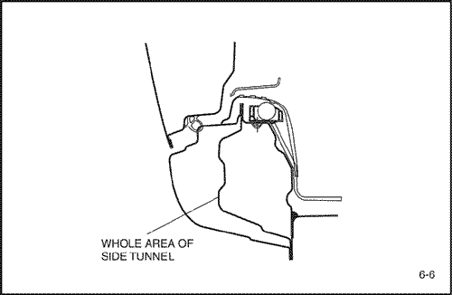

- Снять соответствующие части.
- Двери.
- Уплотнители, обивки стойки и связанные с ними части.
- Ковровое покрытие.
- Узел ремня безопасности
- Выключатель двери и жгут проводов.
- Топливопровод и тормозная магистраль.
- Другие соответствующие детали.
Примечание: Вытянуть и выправить поврежденные места приблизительно до исходной формы.
- Снять соответствующие части.
- Повреждение может распространяться на внутренний каркас крыши, внутреннюю панель боковины и пол. Сначала определить степень повреждения, чтобы можно было правильно вытянуть панель.
Примечание: Накрыть несгораемыми защитными чехлами окрашенные участки, сиденья, ковровые покрытия и другие части.
- Вытянуть и выправить поврежденные места.
- Не вытягивать больше нужного.
- Отрезать и отделить внутреннюю панель боковины.
- Проверить повреждение внутренней панели боковины, затем отрезать новую панель боковины так, чтобы она перекрывала на 30 мм (1,18 in.) переднюю и заднюю стойки.
- Отрезать поврежденную область ручной ножовкой по жирной линии, показанной на рисунке.
Примечание: Соблюдать осторожность, чтобы не разрезать внутреннюю панель. Это может потребовать дополнительного ремонта.


- Если повреждение распространяется на центральную стойку, отрезать ее, как показано на рисунке.

- Накернить точки вокруг точек сварки на сварочной кромке.
- Специальным инструментом высверлить отверстия в сварных точках.
Примечание: Высверливая отверстия, соблюдать осторожность, чтобы не просверлить внутреннюю панель.
- Пневматическим зубилом отделить внутреннюю панель боковины, оставив на месте сварочные кромки.
Внимание! Во избежание травм глаз надевать защитные очки при шлифовке, резке или полировке.
- Отрихтовать поврежденные смежные части.
- Заварить высверленные отверстия.
Внимание! Во избежание травм глаз и ожогов пользуйтесь при сварке каской, рукавицами и защитной обувью установленного образца.
- С помощью молотка и оправки отрихтовать поврежденные участки оставшейся части внутренней панели и выровнять сварочные кромки.
- Выровнять и зашлифовать неровности от оторванных сварных точек дисковой шлифовальной машиной.
- Перед сваркой удалить краску и грунтовочное покрытие с обеих сторон свариваемой кромки.
- Установить новую внутреннюю панель боковины.
- Дисковой шлифовальной машиной зачистить от краски до стального листа обе стороны привариваемых участков новой внутренней панели боковины.
- Закрепить новую панель зажимными устройствами.
- Временно прихватить зажатую секцию сваркой.
Внимание! Во избежание травм глаз и ожогов пользуйтесь при сварке каской, рукавицами и защитной обувью установленного образца.

- Снять зажимные устройства, временно установить крыло и двери и затем проверить зазоры, различия уровней и внешний вид.
- Выполнить основную сварку.
- Приварить переднюю и заднюю часть внутренней панели боковины и центральную стойку встык газовой сваркой или сваркой МИГ.
- Приварить внутреннюю панель боковины и центральную стойку точечной сваркой, как показано на рисунке.
Внимание! Во избежание травм глаз и ожогов пользуйтесь при сварке каской, рукавицами и защитной обувью установленного образца.
- Сначала выполнить пробную сварку и проверить качество сварки.
- Увеличить количество точек на 20% для свариваемых областей.

- Отшлифовать места сварки.
- Выровнять места газовой сварки или сварки МИГ дисковой шлифовальной машиной, затем аккуратно, чтобы не деформировать, выровнять выступающие места молотком.
Внимание! Во избежание травм глаз надевать защитные очки при шлифовке, резке или полировке.
- С помощью молотка и оправки выровнять приваренные точечной сваркой кромки так, чтобы они плотно прилегали к внутренней панели боковины.
- Выровнять деформированные места и различия в уровне сваренных участков с помощью припоя или шпаклевки и зашлифуйте.
- Наложить герметизирующую ленту.
- Наложить герметизирующую ленту на смежные поверхности пола и внутренней панели боковины.
- Нанести грунтовочное покрытие.
- Нанести грунтовочное покрытие на передний пол.
- Нанести краску.
- ПРЕДОСТОРОЖНОСТЬ
- При нанесении лакокрасочных покрытий обеспечить вентиляцию. Большинство лакокрасочных материалов содержат вредные при вдыхании или проглатывании вещества. Прежде чем открывать емкость с лакокрасочным материалом, прочесть этикетку.
- Избегать контакта с кожей. При окраске использовать респиратор установленного образца, перчатки, средства защиты глаз и соответствующую одежду.
- Лакокрасочные материалы огнеопасны. Хранить их в безопасном месте, беречь от искр и огня, не курить.
- Нанести антикоррозионные средства.
- Нанести антикоррозионные средства на внутреннюю часть внутренней панели боковины в достаточном количестве.

- Установить соответствующие детали.
- Очистить пассажирский салон.
- Жгут проводки и связанные с ним части.
- Узел ремня безопасности и ковровое покрытие.
- Обивка и уплотнители.
- Дверь и др.
- Установка производится в порядке, обратном снятию.
- Проверка и регулировка.
- Проверить зазоры и различия уровней.
- Проверить открывание и закрывание замка двери.
- Осмотреть пассажирский салон на предмет протечек.